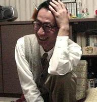

五子文化与知识(八)：牵手五子 成就梦想
#1 五子文化与知识(八)：牵手五子 成就梦想 作者：茗弈宽容 发表时间：2010-3-14 17:09:15
中国棋院在线讯 《五子棋知识》第八章对四位为实现五子梦想而做出突出贡献的中外代表人物作了详细介绍。
八、牵手五子 成就梦想
五子串珠似奥运五环，使不同国家，不同民族，不同文化传统的五大洲兄弟姐妹，以棋联手，欢聚一堂，共同构筑着同一个梦想。
下面我们为五子棋界具有自强不息的拼搏精神，为实现五子梦想而做出突出贡献的四位中外代表人物做一简单介绍。
(一)战神中村茂
中村茂，1959年出生，是日本最负盛名的五子棋手。曾获得两届世界连珠锦标赛冠军。他是日本连珠第一人，也是五子棋棋手等级分世界排名第一人。他精通棋理、富于创新，研究或创新了许多定式变化。他曾在日本五子棋名人战中创造了八连霸的奇迹，被誉为“不败的战神”

【图6：中村茂】
(二)多才的安度
安度(Ando . Meritee)，爱沙尼亚人，生于1974年。他棋风彪悍，计算力极强，是取得世界锦标赛冠军最多的五子棋棋手。1999年开始，安度来到中国台北，从事连珠五子棋教学工作。现任国际连珠联盟规则委员会主席。他曾深情地说：“我将用我的毕生精力去从事我所热爱的连珠事业”。
【图7：安度】
(三)执着五子棋的那威
那威(叶赫那拉.声威)，满族人，1968年出生，是二十世纪九十年代竞技五子棋引入中国大地时期的领军人物。1990年，那威组建中国第一个五子棋民间组织——京都五子棋队。他多次自费出国参加世界连珠锦标赛。为了在中国普及竞技五子棋，他一方面利用自己组织的团队及个人魅力，在中国宣传五子棋，开展五子棋活动。另一方面，它借助世界对五子棋起源国——中国的向往之力，在中国进一步推广五子棋，他曾在1996年始，在中央电视台《黑白世界•五子棋讲座》中是主讲人之一。尽管他现在一直在主持和演艺领域发展，但是他多次表示：“五子棋是我一生的事业。”
【图8：那威】
(四)中国第一个世界冠军吴镝
吴镝今年28岁，辽宁抚顺人。高中时开始接触五子棋，2001年以后渐出成绩，多次在国内赛事中得到较好名次。2004年首届网络星空赛冠军，2007年首届全国五子棋锦标赛亚军，在第十届世锦赛上，吴镝又在世界五子棋最高水平的A组获得了创记录的八连胜，并获得了中国的第一个五子棋世界冠军，中国五子棋苦心经营十几年，他的这个冠军是中国五子棋发展多年来一枚最值得称道的奖牌，是一场期待已久的胜利，是对几代中国棋手包括五子棋推动者、基层教练、教师多年心血和汗水的最好褒奖，也是中国棋院多年来规范化管理所结的硕果。他的这次里程碑式的胜利标志着中国五子棋运动竞技整体实力已居世界前列。
【图9：吴镝】
看到以上的介绍，您一定会被中外构筑自己梦想的这些五子棋英雄人物感到钦佩吧！也有想投入到五子棋项目中来的欲望吧？下面我们就一起来学习一些五子棋的基本技术技巧吧。
#2 Re:五子文化与知识(八)：牵手五子 成就梦想 作者：如火流年 发表时间：2010-3-14 22:40:13
胖子是用什么手段排在二位世界冠军后面，并且排在一位世界冠军前面的？